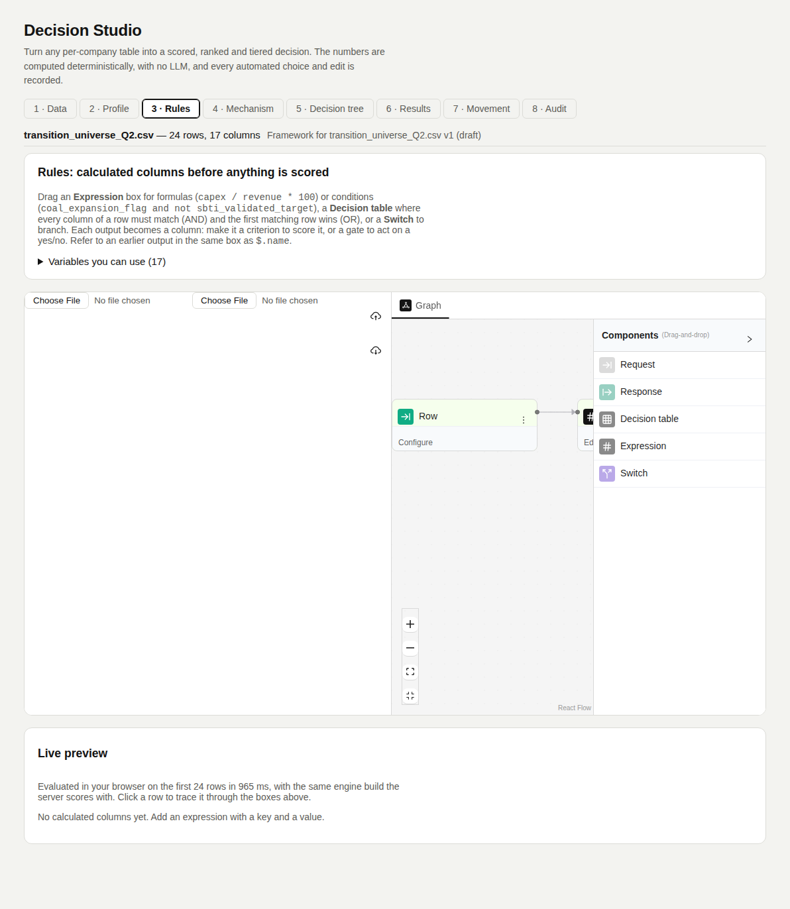

Rules
The engine computesAdds calculated columns before anything is scored. Drawn on a canvas as a decision model and evaluated once per row.
Node types you can use
Only declarative nodes. The schema refuses anything that runs code or loads another graph.
| Node | What it does | Example |
|---|---|---|
| Input | The row: every column by name or slug (Scope 1 (t) → scope_1_t). | |
| Expression | One output per line. Formulas and AND/OR conditions. Earlier outputs in the same box are $.name. | capex / revenue * 100 |
| Decision table | Columns combine with AND, rows with OR. First matching row wins. | sector = Utilities AND coal = Yes → high_risk = true |
| Switch | Sends the row down one branch by condition. | region = EU → EU rule set |
| Output | Every key that is not already a column becomes a calculated column. | |
| Function, Decision (sub-graph) | Refused. Function runs JavaScript; Decision loads another graph. |
Three rules that keep the source in charge
| Rule | What happens |
|---|---|
| Never overwrite a source column | An output named like an existing column is dropped and logged. |
| A failing row gets blanks | Null arithmetic or division by zero leaves that row's calculated values empty. The count and the first error are logged as needs check. |
| Server values are the record | The browser runs the same engine for a live preview. Scoring always re-runs the rules on the server. |
What a calculated column can become
It is profiled and proposed a job like any other column.
| Output type | Typical job |
|---|---|
| Number (ratio, share, difference) | criterion |
| Yes/No (AND/OR condition) | gate: a compound gate needs no second gate system |
| Text (category) | segment or cohort |
In the tool
Screenshots of Decision Studio running on the sample table, taken with the app as it is on main.


Functions applied
What runs at this step, in order, with an example. Blue rows run on GoRules ZEN; the rest is Python in backend/arp/decision/.
| Function | Engine | Example |
|---|---|---|
apply_rules → evaluate_rows | GoRules ZEN | coal_without_target = coal_expansion_flag and not sbti_validated_target → Yes for Tarn Mining, Vega Power, Kalahari Resources. |
apply_rules → evaluate_rows | GoRules ZEN | capex_ratio = green_capex_share_pct / 100 → Nordwind 0.41; Zenith REIT blank (no value). Audit: 2 calculated columns, calculated values left blank. |
Code and formulas
The formula each function applies, and its source as it is in the repository.
evaluate_rowsbackend/arp/decision/rules.py:97–118The graph is checked with zen.ZenEngine().create_decision(graph).validate(), then engine.evaluate_batch(rows) runs it once per row. Each output is flattened into columns.
Python source (22 lines)
def evaluate_rows(graph: dict[str, Any], contexts: list[dict[str, Any]]) -> list[dict[str, Any] | str]:
"""One result per context: the flattened output, or the error text.
Raises ValueError for a graph that cannot run at all (a dangling edge,
a malformed node). An expression syntax error is not caught here -- the
engine reports it per row, and it surfaces as every row failing.
"""
content = json.dumps(graph)
try:
zen.ZenEngine().create_decision(content).validate()
except RuntimeError as exc:
raise ValueError(f"Rule graph does not compile: {_error_text(exc)}") from exc
# The batch call evaluates in parallel inside the engine: ~4x faster
# than a Python loop, which matters because every edit re-scores.
engine = zen.ZenEngine({"loader": lambda _key: content})
responses = engine.evaluate_batch([{"key": "rules", "context": c} for c in contexts])
return [
_flatten(r["data"].get("result") or {})
if r.get("success")
else str((r.get("error") or {}).get("source") or r.get("error"))
for r in responses
]apply_rulesbackend/arp/decision/rules.py:121–182Every output key that is not already a source column becomes a calculated column; a source-column output is dropped; a failing row gets blanks.
Python source (62 lines)
def apply_rules(dataset: Dataset, graph: dict[str, Any]) -> tuple[Dataset, list[AuditEntry]]:
"""Returns a copy of `dataset` with the graph's calculated columns
appended, and the audit entries describing what happened."""
inputs = rule_inputs(dataset)
calculated: list[str] = []
values: list[dict[str, Any]] = []
overwrites: set[str] = set()
failures: list[tuple[int, str]] = []
for i, (context, result) in enumerate(zip(inputs, evaluate_rows(graph, inputs), strict=True)):
if isinstance(result, str):
failures.append((i, result))
values.append({})
continue
row_values: dict[str, Any] = {}
for key, value in result.items():
if key in context:
if value != context[key]:
overwrites.add(key)
continue
if key not in calculated:
calculated.append(key)
row_values[key] = value
values.append(row_values)
rows = [{**row, **{c: _cell(v.get(c)) for c in calculated}} for row, v in zip(dataset.rows, values, strict=True)]
augmented = dataset.model_copy(update={"columns": [*dataset.columns, *calculated], "rows": rows})
audit = [
AuditEntry(
stage="Rules",
item=", ".join(calculated) or "-",
decision=f"{len(calculated)} calculated {'column' if len(calculated) == 1 else 'columns'}",
why="evaluated per row by the framework's rule graph before profiling and scoring; they enter criteria "
"and gates like any other column",
needs_check=not calculated,
)
]
if failures:
row_index, message = failures[0]
audit.append(
AuditEntry(
stage="Rules",
item=f"{len(failures)} of {len(inputs)} rows",
decision="calculated values left blank",
why=f"the graph could not be evaluated for these rows -- first: row {row_index + 1}, {message}. A missing "
"input or a division by zero does this; guard it with a condition (revenue > 0 ? capex / revenue : null) "
"or let the missing-data policy handle the gap",
needs_check=True,
)
)
if overwrites:
audit.append(
AuditEntry(
stage="Rules",
item=", ".join(sorted(overwrites)),
decision="output ignored",
why="a rule may add columns but never rewrite a source value; give the output a new name",
needs_check=True,
)
)
return augmented, audit